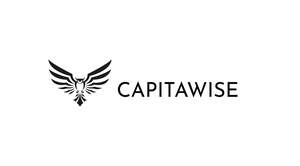

Trade Mark Journal No.2025/043 24 October 2025
UK00004279456 16 October 2025 (9,42)

- Class 9
- Artificial intelligence software; Artificial intelligence software for analysis; Business intelligence software; Artificial intelligence software for healthcare; Artificial intelligence software for vehicles; Artificial intelligence and machine learning software; Software for the integration of artificial intelligence and machine learning in the field of Big Data; Collaboration management software platforms; Interactive software based on artificial intelligence; Collaboration software platforms [software]; Intelligent gateways for real-time data analysis; Intelligent gateways for software defined storage; Software for commerce over a global communications network.
- Class 42
- Platforms for artificial intelligence as software as a service [SaaS]; Software as a service [SaaS] featuring computer software platforms for artificial intelligence; Software as a service [SaaS] services featuring software for machine learning, deep learning and deep neural networks; Software as a service [SaaS] featuring software for deep neural networks; Platform as a Service [PaaS]; Artificial intelligence consultancy; Artificial intelligence as a service (AIAAS); Research in the field of artificial intelligence technology; Providing artificial intelligence computer programs on data networks; Technology consultation in the field of artificial intelligence; Software as a service [SaaS] featuring software platforms for electronic gaming; Platforms for graphic design as software as a service [SaaS]; Programming of software for Internet platforms; Constructing an internet platform for electronic commerce; Programming of software for information platforms on the Internet; Research in the field of artificial intelligence; Software as a service [SaaS] featuring software platforms for graphic design; Platform as a service [PaaS] featuring software platforms for transmission of images, audio-visual content, video content and messages; Design and development of operating software for cloud computing networks; Software as a service [SaaS] featuring software for deep learning; Creation of computing platforms for third parties; Design and development of operating software for accessing and using a cloud computing network; Providing user authentication services using single sign-on technology for online software applications; Information technology [IT] support services [troubleshooting of software]; Hosting of communication platforms on the internet; User authentication services using single sign-on technology for online software applications; Development of computer software for logistics, supply chain management and e-business portals; Design and development of computer software for logistics, supply chain management and e-business portals; Providing user authentication services using biometric hardware and software technology for e-commerce transactions; Hosting of e-commerce platforms on the Internet; Provision of technical support in the operation of computing networks; Software as a service [SaaS] featuring software for machine learning; Providing information about the design and development of computer software, systems and networks; Software development in the framework of software publishing; Computer software technical support services; Technical support services relating to computer software and applications; Development of computer programs recorded on data media (software) designed for use in construction and automated manufacturing (cad/cam); Design and development of operating software for computer networks and servers; Development services relating to computer software application solutions; Development of software for secure network operations; Provision of technical support in the supervision of computing networks; Design services relating to data processing test tools; Programming of operating software for accessing and using a cloud computing network; Development of software for communication systems; Design services relating to data transmission test tools; Design and development of electronic data security systems; Providing information about the design and development of computer hardware and software; Advice and consultancy in relation to computer networking applications; Development and testing of computing methods, algorithms and software; Development of computer software application solutions; Advisory and information services relating to the design and development of computer hardware; Expert reporting services relating to technology; Consultancy relating to software for communication systems; Application service provider (ASP) services, namely, hosting computer software applications of others; Technological advisory services relating to machine engineering analysis; Expert consultancy services in connection with computing networks.
Capitawise Ltd